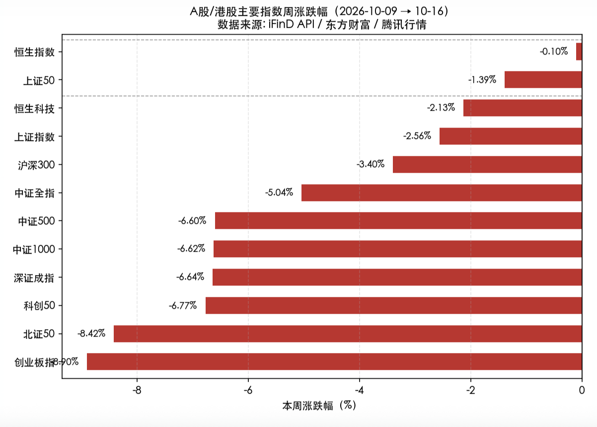
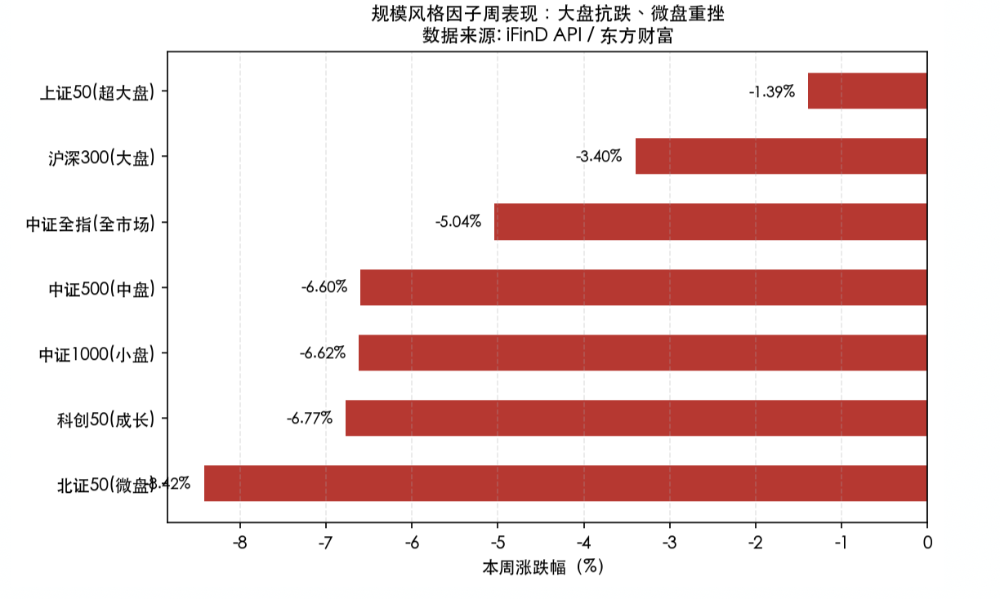
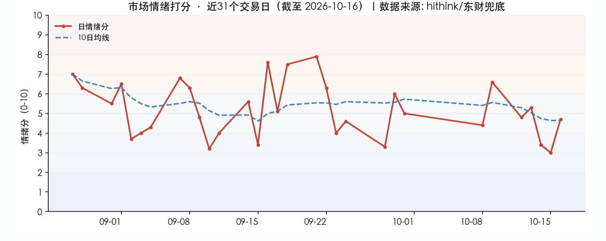
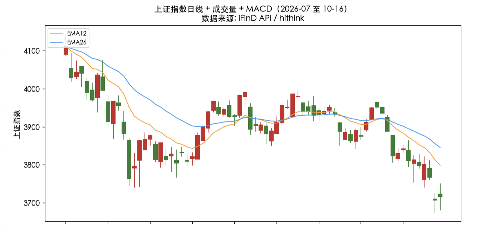

投资备忘20261018-加速的、补跌的和有爹的
2026-10-12 — 2026-10-18 · W42 · 周度备忘
本周的市场走势有点绝望，不仅将节后反弹的预期打掉，还顺带用"二次探底"打破区间震荡的幻想。市场缩量、突破、下行，总量观察变得悲观、结构上也不会有啥好消息——但看到 AI 科技资产加速下跌你不兴奋么，看到煤炭有色类红利资产补跌你幸灾乐祸么，看到神秘资金不断在 14:30 之后买入你不感动么。
话题：加速的、补跌的和有爹的
本周市场的分化是资金分化的具像化。之所以本周更突出，是因为海外的影响和关键点位向下突破的影响。加速下跌的主要是 AI 科技类资产；补跌的主要是煤炭、有色、医药等最近强势的资产；有爹的是银行为主的红利资产和低位消费地产。
资金来源是核心驱动，三条线索：
- 两融杠杆资金持续下降：节日前后两融杠杆资金持续下降，代表高风险偏好的资金在高弹性科技资产上主动或被动地选择止损，带动了很多个股 10 连阴以上。
- "伪装红利"资金的卖出：短期强势的煤炭、医药本周补跌——类似市场震荡的时候你"伪装红利"，吸引了一些参与交易的资金，这些资金在市场下跌突破时选择卖出。
- 神秘资金拉尾盘 + 保险"控总量、卖科技"：神秘资金不断在 14:30 之后买入，加上保险资金"控总量、卖科技"的操作，使得银行红利资产成为短期效率最高的资产。
怎么办？加速的，结合大盘和个股判断时机，加快研究；补跌的，短期资金卖出后筹码相对干净，无论是作为红利还是弹性都有性价比；有爹的不去碰——人家有爹，你难道去装大爷？
当然还有一类"三低"资产：产业趋势、行业竞争和资金结构都跟它没关系，整个 K 线就是"孔雀东南飞"造型——股价年内新低、924 新低、历史新低的"三低"资产。
有爹的不去碰——人家有爹，你难道去装大爷？
本周市场：二次探底
A 股大幅回调，是"外部流动性收紧 + AI 泡沫担忧 + 技术破位"三重压力下的普跌周：上证指数全周下跌 2.56% 险守 3700 点，创业板指 -8.90%、科创 50 -6.77%、北证 50 -8.42% 领跌，成长与小微盘遭重挫；港股相对抗跌（恒指 -0.10%、恒生科技 -2.13%）。结构上呈现极致的"大盘价值抗跌、小盘成长杀跌"分化：红利/银行/白酒/军工（尾盘）逆势，而电子/通信（光模块）/电力设备/煤炭（补跌）重挫。

全周节奏为"缩量阴跌 → 放量加速下跌 → 尾盘 ETF 护盘 → 超跌反弹"：上证自 10-13 高点 3800.86 连续三阴，10-15 放量长阴跌破 3780/3750 两道支撑、盘中最低 3674.82（创 2025 年 8 月以来新低），尾盘宽基 ETF 放量护盘（沪深 300ETF 成交超 150 亿、创近 9 个月新高）拉回 3700；10-16 缩量反弹 0.24% 收 3716.28，出现"价稳量缩、个股普涨"的底部背离雏形。
本周风格极致分化——大盘/超大盘显著抗跌（上证 50 -1.39%），微盘/成长重挫（北证 50 -8.42%、科创 50 -6.77%），规模与风格同向：大盘价值 > 大盘成长 > 中小盘 > 微盘。资金从高估值成长向低估值价值/红利/防御切换，是典型的"风险偏好收缩 + 加息预期升温"下的避险结构。

- AI 硬件是本周最大杀跌主线：通信/光模块（10-12 -4.49%、10-14 -3.93%、10-15 通信设备 -4.45%）、电子/半导体（10-09 -2.34%、10-12 -3.47%、10-14 -2.86%、10-16 元件 -3.83%）连续领跌。核心导火索是美国 AI 资本开支回报担忧（CoreWeave 债券被定价"濒临困境"垃圾债、Anthropic 营收环比放缓、费半 8 连跌）+ 台积电财报虽好但 A 股"利好不涨"。光模块龙头中际旭创、新易盛、天孚通信周内大幅回撤。
- 红利/防御是贯穿全周的避风港：银行（10-12 +2.32%）、白酒（10-15 +1.22%）、石油石化（10-14 +1.71%）、公用事业（10-14 +1.01%）在大跌日逆势护盘，中证红利全周相对抗跌，"科技+红利"哑铃结构成为机构共识。
- 资源/周期股"先强后补跌"：石油石化/煤炭前半周因地缘+高股息走强，10-15 却集体补跌（煤炭 -4.89%、油气 -4.79%、工业金属 -4.35%），反映避险资金在系统性风险下也无差别回撤。
市场展望
宏观上：海外真担忧、国内资金慌。美债最近的走势反映了美股这次是真有点担忧——周中公布的通胀数据超预期，周五油价重新回到 100 美元以上，但同时债券市场却在反弹、收益率下行，投资者对 AI 投资回报的担忧驱动全球风险偏好下降（接宏观第 015 篇《美债5.3%之后…》的框架：AI 资本边际回报的拐点就是利率的尽头）。
A 股内不少资金都希望等到美股出清后进场，这就使得市场出现暂时的空档期：在里面的资金想出去、在外面等的资金暂时不想进来，而神秘资金买入又以红利为主。总量空档和结构分化，使得资金有点慌。
市场情绪：中性偏冷。6.6（10-09 偏暖）→ 4.8（10-12）→ 5.3（10-13）→ 3.4（10-14 偏冷）→ 3.0（10-15 偏冷冰点）→ 4.7（10-16 中性）。全周情绪由"节后修复"一路降温至 10-15 冰点（上涨占比仅 7.7%、跌停 26 家、跌幅≥5% 达 838 家），10-16 在个股普涨下修复至中性。当前情绪处于"超跌反弹、修复待确认"的中性阶段——持续性维度（昨日涨停今日 -1.64%）提示高位接力仍弱，反弹空间受制于持续性不足。

模式识别（中期）：牛市新高—反弹次高—二次破位的模式重现。本周的走势让之前判断的"更长时间区间震荡"的基本场景假设出现变化：如果不能快速修复，会有资金恐慌导致的快速流出；如果能修复就还好。假设出现二次破位不修复的情况，指数下跌的空间参照历史应该在 10% 以上。
模式识别（短期）：7 月以来的震荡区间跌破，中枢下移。破位震荡进入第二个交易日，这个位置短期不快速完成反弹，很容易用快速的、有力度的下杀寻底，参照历史可能在 10% 以上的指数空间；当然如果确认底分型、反弹回到 3800，则市场还可以继续观察——通过国家队的买入形成资金总量的平衡和市场结构的分化。

组合备忘
Beta 组合下跌，表现跑赢市场（市场是指中证全 A -5.04%），Macro 同样下跌。本周市场下跌组合有相对收益、没有绝对收益。Beta 策略本周下跌 **%；Macro 策略下跌 **%。组合仓位上升：Beta 策略仓位 80%，Macro 策略仓位 73%（其中转债 33%）——降低了红利和地产仓位、增加了 HALO。组合的超额主要来自消费地产等类红利资产；HALO 资产中的煤炭有色本周明显承压拖累组合，机器人资产承压继续。
本周操作：总仓位控制的前提下，尝试做结构调整——降低消费地产，增加看好的 HALO 方向；科技资产加速下跌的情况下，尝试做多；Macro 增加转债仓位。主要考虑：控制风险、短期交易、后续灾后重建哪些能反弹。
下一步：继续保持谨慎，着眼下一步的结构调整。市场展望中提到的风险需要重视，同时聚焦放量下跌后的"灾后重建"会在什么方向上展现弹性。修正之前对阶段性底部的判断，仓位控制，留给下一步反弹资产。
结构上：底部加仓的交易型资产减仓、低位资产有超额收益减仓，HALO 资产保持稳定，科技和机器人扩充潜在标的。
研究：三低资产筛选、AI 资产、HALO 资产的梳理和聚焦。
上期钩子的答案：① 是否重演 7、8 月市场结构（队伍资产上涨、其他自生自灭甚至"多杀多"）——部分兑现：银行红利"有爹的"持续被神秘资金与保险买入，科技个股 10 连阴以上"多杀多"，分化比 7、8 月更极端；② 美债加更与"AI 停滞谁来付息"——已落地：宏观第 015 篇《美债5.3%之后…》（10-14）给出方法论框架（纳指是美债利率的边际定价者），本周 CoreWeave 债券被定价"濒临困境"、Anthropic 营收环比放缓，AI 投资回报担忧开始压制全球风险偏好；③ 反弹卖出纪律——执行中：底部加仓的交易型资产减仓、低位资产有超额收益减仓；④ 消费低位修复的持续性——未能持续：消费地产类红利资产虽仍贡献超额，但本周操作已降低消费地产。新钩子：① 二次破位是否修复——不修复则参照历史指数或有 10% 以上下跌空间，快速反弹回 3800 则继续观察；② "灾后重建"的弹性方向——AI 应用、政策刺激还是红利回归（对应宏观 015 的推演）；③ 三低资产筛选的进展；④ HALO 加仓后的承压节奏——煤炭有色补跌是否接近尾声。对账窗口：2026 年 10 月下旬至 11 月。